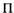
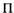

XXI. Bölüm
Uluslararası Dengesizlikten Kaynaklanan Değişimler
Uluslararası değerler kuramının derinliklerine girmek bu kitabın kapsamı dışındadır. Ama para üzerine bir incelemede, böyle bir kurama yönelik kısa bir ön çalışmanın yeri mutlaka olmalıdır.
I. Parasal Dengesizlik Sebepleri Olarak Göreli Fiyat Düzeyleri Ve Göreli Faiz Hadleri
Bir uluslararası para sisteminde denge şartının, her ülke için dış ikrazat haddi ile dış dengenin eşitliği olduğunu görmüştük. Burada iki koşul grubu vardır. Dış ikrazat haddi, iç ve dış göreli faiz hadlerine bağlıyken, dış denge ise iç ve dış göreli fiyat düzeylerine bağlıdır.
Ne var ki göreli fiyat düzeyinin yolundan çıkmasının getirdiği dengesizlikle, göreli faiz haddinin yolundan çıkmasının getirdiği arasında kökten bir farklılık vardır. İlk durumdaki dengesizlik, faiz hadlerinde kalıcı bir değişiklik olmaksızın fiyat (yahut gelir) düzeylerinin değişimiyle ortadan kaldırılabilir, tabii, gelir düzeylerini değiştirme aracı olarak faiz hadlerinde geçici bir değişme gerekecektir. İkinci durumda ise, tersine, dengenin yeniden tesisi sadece faiz hadlerinde bir değişme değil, fakat gelir (ve muhtemelen fiyat) düzeylerinde süreğen bir değişme gerektirebilecektir. Bu da demektir ki bir ülkedeki fiyat ve gelir düzeyleri sadece dış fiyat düzeyindeki değişikliklerden değil, fakat dış yatırım talebinin iç yatırım talebine göre değişiminden kaynaklanan faiz haddi değişikliklerinden de kaynaklanır.
(i) Önce, dengedeki sarsılmanın dış fiyat düzeyindeki bir değişmeyle, mesela bir düşmeyle meydana geldiği yalın durumla başlayalım. Bunun sonucunda dış denge B alçalacak, fakat dış ikrazat hacmi L buna uygun bir değişme göstermeyecek ve neticede L , B ’yi aşacak, altın ülke dışına akacaktır. Banka haddi geçici olarak yükseltilmelidir; fakat buna yol açan süreç, önce fiyatları ve ardından parasal gelirleri düşürerek sona erdiğinde, banka haddinin yine önceki düzeyine dönmesi mümkündür.  ’nin, yani bir bütün olarak çıktının fiyat düzeyinin düşmesiyle ve S1 , L , I1 ve B de yabancı memleketteki fiyat düzeyinin düşmesine uygun olarak, dışarıda fiyatların düşmesinden önce ölçülen parasal değerlerinin altına inmesiyle, denge koşulları (satın alma gücü itibarıyla değişme olmadan) yerine gelecektir. Parasal değerler bir yana, oluşan yeni dengenin öncekinden dikkate değer bir farkı olmayacaktır, üretimin yapısı değişmeden kalacaktır.19
’nin, yani bir bütün olarak çıktının fiyat düzeyinin düşmesiyle ve S1 , L , I1 ve B de yabancı memleketteki fiyat düzeyinin düşmesine uygun olarak, dışarıda fiyatların düşmesinden önce ölçülen parasal değerlerinin altına inmesiyle, denge koşulları (satın alma gücü itibarıyla değişme olmadan) yerine gelecektir. Parasal değerler bir yana, oluşan yeni dengenin öncekinden dikkate değer bir farkı olmayacaktır, üretimin yapısı değişmeden kalacaktır.19
(ii) Bu kez, dış faiz haddindeki yükselme sonucunda dengenin sarsıldığını, fakat iç S ve I1 terimlerinin faiz haddine aynı fonksiyonlarla bağlı olduğunu kabul edelim. Bunun sonucunda L artarak B ’yi aşacak ve altın ülkeden çıkacaktır. Banka haddi, bir önceki örnekteki gibi, hem iç yatırım I1 ’i hem de dış ikrazat L ’yi yavaşlatarak S ’nin I ’yı aşmasını ve fiyat düzeyi  ’nin düşmesini sağlayacak şekilde yükseltilmelidir.
’nin düşmesini sağlayacak şekilde yükseltilmelidir.  ’nin düşmesiyle girişimciler eski üretim maliyetleri düzeyinde zarara girerek üretim faktörlerine teklif ettikleri parasal kazançları düşürür ve bu da nihayetinde temel denklemin ilk terimini küçültür. Bu arada,
’nin düşmesiyle girişimciler eski üretim maliyetleri düzeyinde zarara girerek üretim faktörlerine teklif ettikleri parasal kazançları düşürür ve bu da nihayetinde temel denklemin ilk terimini küçültür. Bu arada,  ’deki düşme ilk önce temel denklemin ikinci teriminin küçülmesi, sonra ilk teriminin küçülmesi sonucunda B ’yi büyütürken, banka haddinin artışı da L ’yi dindirmiş olacaktır. Bu durum, yine L = B olana, yani ülkeden altın çıkışı durana kadar sürecektir. Yeni denge konumunda L ’nin önceki konuma göre S ’deki payı daha büyük iken, S1 ’in payı daha küçüktür. Peki
’deki düşme ilk önce temel denklemin ikinci teriminin küçülmesi, sonra ilk teriminin küçülmesi sonucunda B ’yi büyütürken, banka haddinin artışı da L ’yi dindirmiş olacaktır. Bu durum, yine L = B olana, yani ülkeden altın çıkışı durana kadar sürecektir. Yeni denge konumunda L ’nin önceki konuma göre S ’deki payı daha büyük iken, S1 ’in payı daha küçüktür. Peki  ’nin durumu nedir?
’nin durumu nedir?
B ’nin artmış olması gerekecektir. Bu durumda ihracat artmış veya ithalat azalmış veya ikisi birlikte olmuş olmalıdır. Böylece B ’deki gerekli artış sadece içeride üretilen dış ticaret malları fiyatının düşüşü neticesinde ortaya çıkabilir, bu da üretimde çeşitlenmeye ve I1 ’de daralmaya yol açar. İşte bu üç şeyin tümü de, yukarıda tasvir edilen sürecin bir aşamasında gerçekleşmiş olacaktır. Zira altın çıkışı yurt dışında üretilen malların fiyatlarını yükseltip yurt içinde üretilen malların fiyatlarını pro tanto (aynı ölçüde) düşürürken, faiz haddindeki yükseliş de I1 ’i küçültmüş olacaktır. Yani yeni denge noktasında tüm yurt içinde üretilen malların fiyatları yurt dışında ütretilen malların fiyatlarına nazaran düşmüş olacaktır. Bu göreli düşmenin miktarı –ileride (s. 308-310) göreceğimiz üzere– iç ve dış üretken güçlerin fiziki karakterinin sonucu olan ticaret hadlerindeki değişmeye bağlı olacaktır.
 ’nin bileşenlerinin bazıları düşecek bazıları yükselecektir. Yurt içinde tüketilen tüm kalemler uluslararası ticarete engelsiz giriyorsa, bu durumda  , benzer bir dış fiyat düzeyine göre değişemez. Ne var ki bu koşulun pratikte asla yerine gelmemesi ve bir de ülkelerin çoğunun baskın bir şekilde kendi çıktılarını tüketmesi nedeniyle, bütünlüğü içinde bakıldığında,
’nin bileşenlerinin bazıları düşecek bazıları yükselecektir. Yurt içinde tüketilen tüm kalemler uluslararası ticarete engelsiz giriyorsa, bu durumda  , benzer bir dış fiyat düzeyine göre değişemez. Ne var ki bu koşulun pratikte asla yerine gelmemesi ve bir de ülkelerin çoğunun baskın bir şekilde kendi çıktılarını tüketmesi nedeniyle, bütünlüğü içinde bakıldığında,  ’de kural olarak kesin bir düşüş olacaktır. Tezin esası da budur. Fakat görülecek sebepler nedeniyle bunu biraz daha derinlemesine işlememiz gerekiyor.
’de kural olarak kesin bir düşüş olacaktır. Tezin esası da budur. Fakat görülecek sebepler nedeniyle bunu biraz daha derinlemesine işlememiz gerekiyor.
II. Dış ikrazat ile altın hareketi arasındaki ilişki
Sürdürdüğümüz tez zımnen, B ’nin iç ve dış göreli fiyatların fonksiyonu olduğunu, L ’nin doğrudan fonksiyonu olmadığını varsaymaktadır. Bu ise, ister yabancı fiyat düzeyleriyle ilişkili olsun, ister verili fiyat düzeyinde kendi ülkemizin mallarına olan dış talep hacmi ile ilişkili olsun, L ’nin artmasının, B ’yi L ile aynı ölçüde artırırcasına, iç gelir yahut fiyat düzeylerinde dikkate değer bir sarsıntı olmaksızın dışsal durumu etkilemediğini ifade eder. Oysa biz, tersine, L ile B arasındaki eşitliğin genel olarak aşağı yukarı korunduğunu, L ’deki bir artışın B ’de doğrudan bir artışı uyarmadığını, aksine L ’nin B ’yi aşmasının bir altın hareketi tehdidini yahut olgusunu yarattığını varsaydık. Zira bu hareket, mevcut yatırım dengesinde sarsıntı yoluyla ilgili ülkelerde karşılıklı iç ve dış göreli fiyat değişikliklerine yol açarak, ülkelerin kendi banka otoritelerini, ikrazat hadlerini L ’nin net miktarını geçici olarak küçültme ve oradan da (L ’de geçici küçülmenin gerekmediği kadar ama) B ’yi nihai olarak büyütecek şekilde değiştirme kaygısına sokar.
Yukarıda yürütülen muhakeme, fiili altın hareketine dayalı olduğu sürece, Ricardo tarafından çok az dikkate alınan –ve mesela Profesör Taussig20 tarafından günümüz olgularıyla da ilişkileri sergilenen– uluslararası sermaye işlemlerini kapsayacak şekilde genişletilmiş geleneksel Rikardocu doktrinle uyumludur. Bununla birlikte Büyük Britanya’da on dokuzuncu yüzyılda büyük kabul gören ve bugün de hâlâ kabul gören ampirik kökenli bir diğer geleneksel doktrinle pek uyumlu değildir. O yaklaşıma göre, dış ikrazat, dış dengeyi doğrudan ve neredeyse otomatik olarak uyarırken, fiili altın hareketinin rolü küçüktür. Varılan bu sonuç, bence aslında a priori bir muhakemeden ziyade Britanya’nın ondokuzuncu yüzyıldaki tecrübesine dayanıyorsa da, yakın zamanda –bilhassa Alman transfer problemi ile bağlantılı olarak– başta Profesör Ohlin’inki olmak üzere tez desteği de bulmuştur.
Profesör Taussig, International Trade adlı çalışmasında, soruyu, L ’nin değerindeki ciddi medcezirlerden muzdarip çeşitli ülkelerden derlediği on dokuzuncu –ve erken yirminci– yüzyıla ait örnekler üzerinden, tümevarımsal bir teste tabi tutma gayreti içindedir. Elde ettiği ise, hâliyle –aslında kaçınılmaz olarak,– B ’nin ve L ’nin birlikte hareket etmeye meyilli olduğudur. Ancak iş, B ’yi L yönünde gitmeye boyun eğdirecek parasal hareketlerin derecesi nedir sorusuna gelince, sonuç daha da belirsiz olur. Bazen, olgular Rikardocu yaklaşımı destekleyici gibidir; bazen de parasal değişimlerin kuramın esaslarını doğrulamaya yetecek ölçüde tespit edilmesi güç olur. Hatta bazı durumlarda altın girişi, fiyatların artmasından önce değil, sonra ortaya çıkabilmektedir.
Profesör Ohlin’le Economic Journal (1929) sayfalarındaki bir tartışmamızda, özellikle Alman transfer sorunuyla ilgili olarak, kendi bakışımın kuramsal temelini yeterince açık bir şekilde ortaya koyamamıştım. Çünkü, önceki bölümlerin analizi o sırada yayınlanmamıştı. Şimdi bu analiz yardımıyla söz konusu sıkıntıyı çözüp, olguların hangi şartlarda Profesör Ohlin’in teziyle, hangi şartlarda Ricardo-
Taussig teziyle uygunluk gösterdiğini sergileyebileceğimi ümit ediyorum.
Öncelikle, tezin özüyle ilişkili olmayan iki durumu bir kenara bırakmak gerekiyor. Bunlardan biri dış ikrazatın, tahsilatların yurt içi alımlarda kullanılacağına dair bir sözleşmeyle yahut uzlaşıyla bağlanmasıdır. Fakat böyle bir tanzim yoksa, tahsilatların yurt dışında kullanılması olağandır. Çünkü aslında böylesi düzenlemeler, toplam miktarları itibarıyla göz ardı edilebilir olmaları bir yana, arz edilen malların maliyetini sübvanse etmekle aynı mahiyette olup, yüklenebilecek faiz haddi pahasına fiyatlarını düşürmek anlamına gelir.
Diğer durum, fiili altın hareketinin yerini likit dış varlık hareketinin almasını sağlayacak biçimde yahut tarzda, bir altın mübadelesi yönetiminin varlığıdır. Konuyu ele alırken bu türden değişimleri altın hareketleri ile eşdeğer göreceğiz.
Bir ülkede altın hareketinin önünü kesen (yani G=0 olmasını sağlayan) piyasa faiz haddi değerine uluslararası had diyelim. (Aynı para sisteminin muhtelif üyelerine ait uluslararası hadler, hâliyle, birbirinden bağımsız değildir.)
Dolaylı ticaretin komplikasyonlarından kaçınmak için, A ve B gibi sadece iki ülkenin olduğu durumla başlayacağız.
Başlangıçta iki ülkenin de G=0 ve I=S şeklinde denge konumunda olduğunu varsayıyoruz. Bu, her ülke için şu anlama gelir:
kendi piyasa faiz haddi = kendi uluslararası haddi = kendi doğal haddi.
(Okur unutmamalıdır ki bu, uluslararası ikrazat mobilitesi tam olmadıkça, faiz haddinin her iki ülkede de aynı olacağı anlamına gelmez. Ancak, ülkelerden birinde piyasa haddi ile uluslararası had eşitse, bu durumda –sadece iki ülke söz konusu iken– diğer ülkede de piyasa haddi ile uluslararası had eşit olmak zorundadır.)
Şimdi, ülkelerden A’da yatırımın cazibesinin arttığını, B’de artmadığını farz ediyoruz. Burada, tartışılacak ilgili iki sorun ortaya çıkar, yeni denge konumunun gerçekleştiği zamanki karakteristikleri ve eski denge konumundan yenisine geçişin doğası. (Piyasa faiz haddindeki yükselmenin her iki ülkenin tasarruf haddine hissedilir bir tesiri olmadığını varsaymak, tezin özünü değiştirmezken meseleyi sergilemeyi kolaylaştıracaktır.)
1. İlk olarak, Yeni Denge Konumunun Karakteristikleri.
Piyasa haddi, uluslararası had ve doğal had, iki ülkede de karşılıklı eşitlenir, fakat iki ülke birlikte alındığında –dış ikrazat mobilitesinin yokluğu hâline kıyasla A’da bir basamak düşük ve B’de yüksek olacak şekilde– yatırımın artan marjinal cazibesine uygun olarak, eski düzeylerinden biraz daha yüksek olurlar. Bu arada B ve L eski değerlerinden büyük olacak şekilde yeniden eşitlenir. Diğer bir deyişle yatırım yer değiştirir: Daha önce B ülkesinde iken, A ülkesinde yatırım artışı olur. Peki, bu yer değiştirmenin iki ülkenin parasal kazanç düzeylerine etkisi nedir?
A ülkesinde yeni yatırımı kolaylaştıracak farklı bir şey üretmek için, eskiden B ülkesinde yeni yatırım malları üreten faktörlerde bir dönüşüm olması zorunludur. Bu da, A ülkesindeki faktörleri A’da yatırım malı üretmek üzere serbest bırakacak şekilde, ya eskiden A’dan ithal edilen malları üreten B’deki faktörlerle, ya da eskiden A’da üretilirken şimdi A’ya ihraç edilecek malları üreten B’deki faktörlerle, veya artık A’da yapılan ilave yeni yatırımda doğrudan kullanılabilen A’ya ihraç edilecek malları üreten B’deki faktörlerle mümkündür.
Eğer üretimin karakterindeki bu dönüşüm verimlilik kaybı olmaksızın gerçekleşebilirse, örneğin B ülkesi eskiden, duruma göre B veya A’da satılmak üzere A’da üretilen malları, yine aynı fiyattan ve üretim faktörlerinin önceki istihdam koşullarında elde ediyor oldukları parasal kazançlarda düşmeye yol açmadan veya girişimcileri zarara sokmadan üretebiliyorsa, yeni denge durumunda iki ülkedeki parasal kazanç hadlerinin eskisinden farklı olması için hiçbir sebep yoktur.
B ülkesi A’daki yatırım malları için gereken malzemenin üretiminde verimli olduğu sürece, bu malları A’da üretmeye kıyasla bir verimlilik kaybı değil, aksine verimlilik kazancı olabilir. Ayrıca bu durumda B’deki parasal kazançlar –bazı hâllerde görülebileceği üzere,– A’dakilere nazaran düşmeyecek, tersine, etkili bir şekilde ancak B’nin üretim faktörlerince karşılanabilen A’daki çeşitli yatırımların çekiciliğindeki artış sonucunda, yükselecektir de. Ama eğer A’daki yeni yatırım malları, o ana kadar B’ye ihraç edilen veya o andan itibaren B’den ithal edilecek malların üretiminden boşa çıkan A’nın üretim faktörleriyle üretilecekse, bu durumda ön kabul de tersine döner. Zira, bir kazanç getirmedikçe A’nın eski malları ihraç etmesi veya ithal etmekten kaçınmış olması pek muhtemel değildir. Dolayısıyla genel olarak, öncekine göre yeni denge durumunda B’deki kazanç hadleri A’dakilere kıyasla düşmek zorunda kalacaktır.21
Bu durum çoğu kez, “ticaret hadleri”nde –B ülkesi aleyhine– bir değişme olacağı biçiminde ifade edilir. Ticaret hadlerindeki değişme, B tarafından ihraç edilen malların fiyatındaki nispi değişmenin, ithal edilen malların fiyatındaki nispi değişmeye oranıyla ölçülür. Öte yandan, bu oran, bir ülkedeki faktör mobilitesinden dolayı söz konusu faktörlerin iç ticarete konu olan sektörlerdeki kazanç hadlerinin dış ticarete konu olanlardakilere eşitlenmesi durumu hariç, A’daki ortalama fiili kazanç hadlerindeki değişmenin B’deki aynı değişmeye oranıyla aynı olmayacaktır. Hâliyle, buna reel kazançlardaki değişmelerin parasal kazançlardakiler kadar büyük olmayacağını ve bir de dış ticaretin ekonomideki öneminin az olduğu bir ülkede, reel kazançlardaki değişmenin daha az olacağını eklemek gerekir.
Yatırımın A ülkesinde cazip hâle gelmesinin A ile B arasındaki ticaret hadlerinde yarattığı değişmenin miktarı, geçişin karakterinden ve onun sebebi olan araçlardan bağımsızdır; parasal olmayan faktörlere –fiziki olaylara, kapasitelere ve her ülkede diğerinin fiziki verimlilikle ürettiği mallara yönelik talep esnekliklerine– bağlıdır.
Ticaret hadlerindeki bu farklılaşma bazen çok küçük olabilir. Mesela Büyük Britanya’nın on dokuzuncu yüzyılda demir yolu için yurtdışında açtığı krediler böyleydi ve bu yatırımlar için gerekli malzemenin verimli tek üreticisi kendisiydi. Ayrıca, yeni durumun B ülkesi için mutlaka genel bir dezavantaj yaratması da gerekmez. Zira, ticaret hadlerindeki bozulmayı telafi etme yönünden, B’nin üç kazanç kaynağına sahip olması mümkündür: faiz haddinin kendi tasarrufları lehine yükselmesi; yeni kredilerin faizlerinin geri ödenmesinin yahut yeni kredilerin tamamıyla ödenmesinin ardından ticaret hadlerinin tersine dönmesi; yeni yatırım sonucunda ülkenin A’dan satın alageldiği malların maliyetinin düşme ihtimali.
Bununla birlikte ticaret hadlerinin B aleyhine değişmesi bazı koşullarda ciddi boyutlara varabilir. Bu eğilim özellikle A’nın B mallarına yüksek tarife uygulaması hâlinde ve B’nin A’daki yeni yatırımın gereksindiği maddeleri doğrudan arz etme imkânı olmaması hâlinde ortaya çıkar.
Ticaret hadlerindeki değişim kısa dönemde büyük olma eğilimindedir. Bu durum iç ve dış ikrazatın göreli cazibesinde ani bir değişim olduğu zaman ortaya çıkar. Çünkü, üretim faktörlerinin ciddi verimlilik kaybına uğramadan faaliyetlerinin niteliğinde bir dönüşüme yol açmaları zaman gerektirir. İşte, yaygın tabiriyle paradan “kaçış”ın bir felaket olabilmesi de –yani, bir ülkenin vatandaşlarının şu ya da bu sebeple kaynaklarını dışarıya borç vermek için engellenemez bir dürtüye kapılmaları– bu sebeptendir. Ani bir güvensizlik sonucunda, borç vermenin iç ve dış cazibesinde meydana gelen ani değişimin ticaret hadleri üzerindeki kısa dönemli olağanüstü etkisine dair, savaş sonrasında dikkate değer örnekler vardır.
Profesör Cassel’ın Purchasing Power Parity Theory of the Foreign Exchanges (Yabancı Para İçin Satın Alma Gücü Paritesi Kuramı) adlı çalışmasındaki en yetersiz yan, galiba, ticaret hadlerindeki değişmelerin etkilerinin ihmal edilmesidir. Çünkü bu durum çıkarımlarının sadece uzun dönemli geçerliliğini sarsmakla kalmıyor, fakat, kısa dönem dış ikrazatın cazibesindeki keskin değişmelerle karakterize edildiğinde, kısa döneme dair çıkarımlarını da yanıltıcı kılıyor.
2. İkinci olarak, Geçişin Karakteristikleri.
İki ülkedeki göreli parasal kazançlarda uygun bir değişim olana kadar, ikisinde de uluslararası haddin doğal hadle eşitlenemeyeceğini görmüştük. Ne var ki bu göreli değişme, ülkelerden birinin kendi mutlak haddini değiştirerek ve diğerininkini sabit tutarak değişimin tüm ağırlığını üstlenmesiyle veya değişimin yükünün iki ülke tarafından paylaşmasıyla da meydana gelebilir.
Her ülkede, parasal gelire oranı sabit bir miktarda altın rezervi tutulması hâlinde, değişimin ülkelerce yüklenilecek payı önceden bellidir ve esas yük küçük ülkenin üstündedir. Ama eğer ülkeler bu oranda değişikliğe izin vermeye hazırsa (ve fiilen dış yatırım artışından doğan değişimler de, bir ülkeden diğerine altın hareketi hiç olmasa bile, genel olarak altın rezervlerinin toplam gelire oranında ancak küçük bir değişim gerektiriyorsa), bu durumda iki ülkenin mutlak kazanç hadlerindeki değişmenin yüküyle ilgili oransal paylaşım belirsizleşerek olayların gelişimine ve geçiş süreci boyunca iki ülkenin merkez bankalarının politikalarına bağlı hâle gelir.
Bunu tasvir etmek için uç durumlara bakalım. A ülkesinin fazladan altın girişine itirazı olmadığını ve B ülkesinin politikasıyla ilişkisiz olarak piyasa haddini doğal hadle eşit olacak şekilde sabitlediğini, buna karşılık B ülkesinin de altın kaybetmeye razı olmadığını ve piyasa haddini uluslararası had ile eşit olacak şekilde koruduğunu kabul edelim (uluslararası had, elbette, büyük ölçüde A ülkesinin sabitlediği piyasa haddine bağlı olacaktır). Böyle bir durumda A ülkesi kendi piyasa haddi ile doğal had ve uluslararası had arasında eşitsizlik dönemi geçirmez, altın stoğunda değişiklik olmaz ve dolayısıyla kazanç haddinde değişiklik ihtiyacı da doğmaz. Böylece değişimin bütün yükü de, altınını korumak için, bu şekilde başlayan deflasyon süreciyle, piyasa haddini doğal haddinin üstünde tutacak şekilde kazanç haddini gereken ölçüye düşürmeye zorlanan B ülkesindeki kazanç hadlerinin üstüne yıkılır.
Öte yandan B ülkesinin, piyasa haddini doğal haddinin üstüne çıkarmak yerine, herhangi bir miktar altın kaybına hazırlıklı olması hâlinde, değişimin yükünü taşıyan ülke, kendi parasal kazanç haddi, bu esnada sabit kalacak olan B’deki hadde göre gereken ölçüye yükselene kadar devam eden enflasyon nedeniyle, A ülkesi olur.
İki ülke arasındaki altın akışının (eğer varsa) miktarı, süreç açısından bir anlamda, olmasa da olur, niteliktedir. Zira aynı sonuçlara altın akışının gerçekliği kadar olabilirliği ile de ulaşılabilir. A’nın ve B’nin kazanç hadlerindeki mutlak değişim miktarı, bu ülkelerin kendi doğal ve piyasa hadleri arasında sürdürdükleri ilişkiler itibarıyla merkez bankalarının politikalarına bağlıdır. Politikası diğerininkinden bağımsız olanın ve geçiş boyunca piyasa haddini doğal had yakınlarında koruyanın kazanç haddi daha az mutlak değişime uğrayacaktır.
Genelde ülkelerin altın kaybetmeye, kazanmaya kıyasla çok daha isteksiz olması, değişimin yükünün borç veren ülkece taşınacağını anlatır. Değişimin yükü, yalnızca borç veren ülkenin altın kaybetme riskine dönük bağımsız bir tavra niyeti ve imkânı olması hâlinde, borç alan ülkeye yıkılabilir.
Fakat durum eski bir ülkenin yeni bir ülkeye borç vermesi olduğunda, borç veren ülke için geçişin güçlüklerini örtmeye yardım edecek gerekli şartlar var olabilir. Çünkü dış kredinin, borçlanan ülkedeki doğal faiz haddinin piyasa haddine göre yükselme eğiliminin dış koşullarca dikte edilen sonucu (ve belirtisi) olması mümkündür. Bu durumda kredi, daha önce ve ülkenin kazanç haddindeki bir artışın eşliğinde veya ondan daha önce gerçekleşebilir ki kredinin yokluğu hâlinde bu artış dış dünya ile ilişkilerde dengesizlik durumuna yol açardı. Özetle, dış kredi, borçlanan ülkede iç yatırımın henüz doğarken boğulmaksızın iç tasarrufa kıyasla artmasına imkân verir. Aksi takdirde fiyat artışı, altın kaybı ve bunların sonucunda piyasa haddinin yükselişi, iç yatırım hacmini geriletecektir. Ne var ki okurun dikkat etmesi gereken nokta, bu durumun sadece, borçlanan ülkedeki doğal faiz haddinin başka bir sebeple dışarıdakine göre zaten yükseliş eğilimine girmesi hâlinde meydana geldiğidir. Dolayısıyla kredinin, kendiliğinden yükselen iç yatırım dalgası karşısında mevcut dengeyi sürdürmek için mi gerektiği, yoksa yeni bir dengeye geçişin gereği mi olduğu arasında fark vardır.
Öte yandan, kredi, borçlanan ülkedeki piyasa faiz haddinin, doğal faiz haddinde buna karşılık gelen bir eğilim olmaksızın yükselmesinden dolayı ise, bu durumda borç veren ülkede, bunun yol açacağı ciddi altın hareketine izin verilmesi becerilemiyorsa, deflasyonist bir sonuç beklememiz gerekir. Böyle bir durum, kısmen, borçlanan ülkenin bankacılık otoritesinin, altın stokunu artırma arzusundan kaynaklanan kasıtlı politikasından ileri gelebilir. Yahut, bankacılık sisteminin karakteri sonucunda şu ya da bu sebeple, mesela kredi borçlanan ülkede doğal haddin yükselişinden değil, fakat mali dolaşımın büyüyen gereklerini karşılamak için piyasa faiz haddinin yükselişinden ileri geldiği için, buna mecbur kalınmıştır. Örneğin 1928-9’da Birleşik Devletler ile dünyanın geri kalanı arasında L ’nin değerindeki değişme, muhtemelen, yatırım faktörlerinden çok, Birleşik Devletler’de mali dolaşımın gereklerini artıran mali faktörlerden ileri geliyordu. Öte yandan Birleşik Devletler’deki sıkı para, diğer ülkelere kıyasla doğal faiz haddinin artışından ileri gelmiş olsaydı, sıkı para politikasının dünyanın geri kalan ülkelerinde ciddi bir sıkıntı yaratması yahut dünya mal fiyatlarını baskılaması gerekmezdi. Çünkü bu yönde Amerika aleyhine giderek büyüyen dış dengenin eşlik edeceği eş zamanlı bir eğilim olurdu.
Dolayısıyla, sorumluluğun borçlanan ülkenin yatırım faktörlerinden ziyade mali faktörlerine bağlı olması durumunda, altın hareketleri devam etme eğiliminde olacak, ya da –bundan kaçınmak için– piyasa faiz haddi dünyanın geri kalanında doğal faiz haddini aşacak bir düzeye yükselmek durumunda kalacak ve yatırım haddini her yerde tasarruf haddinin altına düşürerek bir kâr deflasyonu rejimine girilmesine neden olacaktır. Bu, kâr deflasyonlarının (enflasyonlarının da) uluslararası bir sistemin bir üyesinden diğerine yayılma eğilimine girdiği yolu tasvir etmeye yarar ve büyük çaplı bir altın hareketi olmaksızın da ortaya çıkabilir, eğer diğer üyelerin kendi altın stoklarını ciddi ölçüde düşmeye bırakma imkânları veya arzuları yoksa, altınlarını koruma gayretlerinin ülkeleri zorunlu olarak getireceği yer benzer bir deflasyondur. Hatta, ciddi bir altın hareketi olsa bile, hareketi başlatan ülkenin büyük miktarlarda altını, kendi piyasa haddi kendi doğal haddiyle eşitlenene kadar düşmeye zorlanmaksızın absorbe edebilmesi durumunda da aynı şey meydana gelecektir.22
Sürecin ve tezin yapısını göstermek üzere yeterince şey söyledim. Çok çeşitli tasvirler yapılabileceği açıktır. Örneğin, fazla altın kaybetmek istemeyen, kazanç hadleri deflasyonist güçlere duyarlı olmayan bir borç veren ülkenin bir denge konumundan diğerine geçişi uzun ve sıkıntılı olabilir. Fakat bu da, konuyu devam ettirmem hâlinde başlı başına bir kitabı dolduracak şekilde uluslararası ticaret kuramının inceliklerine girmeme yol açar. Bu yüzden, düşüncenin takibini ilgilenen okuyucuya bırakmak durumundayım.
Ama belki, Alman transfer problemi konusunda yukarıda verdiğim, Profesör Ohlin’le Economic Journal’daki (1929) tartışmamıza parantez içinde değinebilirim. Almanya’nın yaptığı tazminat ödemesi, eşit miktardaki zorunlu dış yatırıma çok benzer şekilde, ortaya çıktığı yılda gerçekleşir. Tek fark şudur: Almanya, dış yatırımın getireceği sonraki yıllara ait kümülatif karşılıklardan yararlanmayacaktır. Ayrıca bu yatırım, Almanya’nın ihraç mallarına doğrudan talep demek olan dışarıdaki kendiliğinden değişime de karşılık gelmemektedir. Bu durumda ben de, Profesör Ohlin’in, alıcı ülkelerde uygun bir kredi politikası varsa, cari kazanç haddindeki değişimin yükünü Almanya’nın üstüne yıkmaksızın ve bir altın hareketine yol açmaksızın yeni dengeye ulaşılabileceği görüşünde olduğu kanısına varıyorum.
Doğrudur; böyle bir şey teorik olarak imkânsız değildir. Ne var ki ben bunun fiili koşullarda kuvvetle gayrı muhtemel olduğunu ve Profesör Ohlin’in de bunun tersini göstermek üzere, kendi sonucunun geçerliliği için yerine gelmesi gereken koşulları daha eksiksiz bir şekilde araştırmak zorunda olduğunu ileri sürüyorum.
Bir kere, bu muhakemenin ticaret hadlerindeki ve dolayısıyla Almanya’daki ya da başka bir yerdeki göreli kazanç hadleriyle ve Almanya’nın reel ücret haddindeki zorunlu değişme miktarıyla ilgisi yoktur. Bu, sadece, söz konusu göreli değişmenin, esas olarak Almanya’daki parasal ücret haddinin mutlak düşüşüyle mi, yoksa başka yerlerdeki parasal ücret haddinin mutlak yükselişiyle mi meydana geleceği meselesiyle ilgilidir. İlk seçenek açısından şartların daha iyi yerine geldiği bir durum bulmak zordur. Çünkü Almanya dünyanın geri kalanının kredi politikaları üzerinde hissedilir bir etkiye sahip olmaya yetecek miktarda altından vazgeçebilir durumda değildir ve alıcı ülkelerdeki doğal faiz haddinin Almanya’daki doğal hadde kıyasla hazır bir yükselme eğilimi de yoktur. Ayrıca, Almanya, dış yatırımının büyüme hızını, göreli parasal kazançların ayarlanabileceği bir hıza uydurmaya dönük düzenlemeye girişecek hâlde de değildir (yahut aynı şeyi dış borçlanmasını artırarak yapabilirse de bu, kendi borç vermesini azaltmasından daha güç bir iştir). Ben buradan, savaş tazminatlarının, (parasal gerekliliklerden ziyade Almanya’daki ve dünyadaki üretken güçlerin yapısıyla ilgili fiziki olgulara bağlı olan) ticaret hadlerinde ciddi bir etki gerektirmesi hâlinde, Almanya’daki parasal kazanç haddinin sancılı (ve neredeyse uygulanması imkânsız) bir deflasyon yoluyla bastırılmasının gerekebileceği sonucuna varıyorum. Bu sonuç üzerinde düzeltmeler yapmak, dünyanın geri kalanının ya bilerek ya da talihli bir tesadüfle Almanya’nın göreli bir uyarlanma sağlamasındaki pratik güçlüklerini hafifletecek şekilde, gelir enflasyonuyla sonuçlanacak eğilimleri özendirmesi ya da yeni dışsal koşullar sayesinde daha yüksek bir parasal gelir düzeyine geçmesi hâlinde gerekli olacaktır.
Yatırımın yapıldığı yerde bir değişim olmasıyla meydana gelen geçiş problemini kastetmek üzere, Almanya’nın savaş tazminatına dair alıştığımız terminoloji olan “transfer problemi”ni genel duruma dair benzer bir deyim olarak kullanabiliriz. Böylece, uluslararası denge (yani her ülkede uluslararası faiz haddinin doğal hadle eşitliği) çeşitli ülkelerin göreli kazanç hadlerinde değişiklik gerektirdiği zaman, her bir ülkenin kazanç haddindeki mutlak değişim, genel olarak aşağıdaki iki faktöre bağlı olur:
(1) Gereken göreli değişmenin toplam miktarı. Bu, üretimde, bir yerde belli türden bir yatırımın gerektirdiği malların başka yerde farklı türden bir yatırımın gerektirdiği mallara çevrilmesindeki verimlilik kaybına ve güçlük derecesine, yani ticaret hadlerindeki zorunlu değişim miktarına bağlıdır.
(2) Toplam göreli değişme miktarından her ülkeye düşen pay. Bu da her bir merkez bankası için, bankanın elindeki altının dolaşımdaki paraya oranındaki değişmeleri destekleyecek politikaya, mukayeseli beceriye ve dayanıklılığa bağlıdır.
III. Dış yatırımın net milli avantajı
Görmüştük ki dış yatırım artışı eşliğinde ticaret hadlerinde ortaya çıkan değişmenin sebebi, borç veren ülkenin faktörleriyle üretilen çıktının, borçlanan ülkedekilerle üretilene kıyasla (hem teknik verimlilik hem de ilgili muhtelif talep esneklikleri açısından) değişim öncesine göre daha verimsiz üretilen türden bir çıktıya dönüşmek zorunda kalmış olmasıdır. Bu ise, faktörlerin marjinal verimliliğinin (marginal efficiency), dış ticaret mamullerinin mübadele yoluya elde edilmesi yüzünden azaldığı anlamına gelir. Yani mübadele hadleri (terms of exchange), sadece dış ticaretin artmış olan dış yatırım hacmine karşılık gelen kısmı itibarıyla değil fakat, dış ticaretin tümü itibarıyla da –elbette rekabetçi şartlar varsayımı altında– faktörlerin aleyhine dönerler. İhracat karşılığında ithâlat elde etmek için çalışan faktörlerin çıktısını, tanımlarımız gereğince, mübadele ile elde edilebilen ithâlat miktarıyla ölçtüğümüz için, bu, borç veren ülkedeki üretim faktörlerinin toplam çıktısının küçülmesi anlamına gelir. Küçülmenin miktarı ise, belli bir ithalat karşılığında daha fazla ihracat yapılmasından yahut eskiden ithal edilen malların yerini içeride üretilenlerin almasından dolayı meydana gelen kayba karşılık gelir.
Yeni denge konumundaki fiili parasal kazanç hadleri küçülürken, daha az bir ölçüde, reel kazançlar da küçülecektir. Bununla birlikte, bir denge noktasında parasal verimlilik kazançları (efficiency earnings) ile fiyat düzeyi aynı oranda değişeceği için, reel verimlilik kazançları değişmeden kalacaktır. Diğer bir deyişle, E/(O.) , yani reel verimlilik kazançları haddi değişmeyecektir. Ancak, hem çıktı (O), hem de üretim faktörlerinin fiili reel kazançları (E/ ) birlikte ve aynı oranda küçülecek, bu da üretim faktörlerinin yeni verimliliği ile eskisi arasındaki kayba karşılık gelecektir.
) birlikte ve aynı oranda küçülecek, bu da üretim faktörlerinin yeni verimliliği ile eskisi arasındaki kayba karşılık gelecektir.
Öte yandan, dış yatırıma angaje durumdaki sermayenin verimliliği (efficiency), elde edilen faiz haddinin yükselmesi sebebiyle artar. Dışarıdaki yatırım payının artması sonucunda ülkenin kazançla mı, kayıpla mı karşılaşacağı, dış yatırımın gelecekteki gelirinden ve bu gelirin avantajlı ticaret hadlerinde ödenmesinden doğan muhtemel kazancın, yatırımın yapıldığı andaki olumsuz ticaret hadleri nedeniyle ortaya çıkan ani kayıp ile mukayesesine, yani, iç yatırım talebinin faiz haddi esnekliği ile dünyanın bizim mallarımıza talebinin ve bizim onlarınkine talebimizin esnekliğiyle mukayesesine bağlıdır.
İhraç mallarındaki kazançların diğer mallardakiyle aynı olduğu, sorgulanan çeşitlilik yelpazesi itibarıyla sektöre sabit getirinin (constant return to industry) geçerli olduğu ve toplam tasarruf hacminin değişmediği şeklindeki basitleştirici varsayımlar gereğince, ihraç malları fiyatlarının ithal mallarına göre düşmesinden gelen zarar E2(p1–p2)– F2(q1–q2) ile ölçülür. Burada E2 ihracatın ve F2 de ithalatın yeni konumdaki hacmini;23 p1 ile q1 , sırasıyla ihraç ve ithal mallarının eski konumdaki fiyatlarını, p2 ile q2 de yeni konumdakileri gösterir. Öte yandan, faiz haddindeki yükseliş sebebiyle cari dış ikrazat avantajından gelen kazanç (gain) s.L’ ile ölçülür. Buradaki s faiz haddindeki oransal yükseliş ve L’ de yeni konumdaki dış ikrazat miktarıdır. Dolayısıyla, hesaba giren iki unsur itibarıyla ülkemizin net milli kazancı (veya kaybı):
s.L’ – E2 (p1 – p2) + F2 (q1 – q2) ’dir.
Bu büyüklüğün negatif değil de pozitif olması için bir ön gerek göremiyorum. Bir ülkede iç yatırım esnekliğinin (elasticity for investment) büyük, ihraç ve ithal malları talep esnekliğinin küçük olması hâlinde, büyüklüğün negatif olması beklenebilir. Yatırımı yapan ülke için dış yatırım hacminin, güçlerin serbest olduğu bir oyunda (free play of forces), daima toplumsal optimumda olduğu şeklindeki ortodoks doktrin, muhtemelen, ihracat fiyatlarındaki çok küçük bir düşüşün B ’de kâfi artışa yol açacağı varsayımına dayanmaktadır.
Yukarıdakinde bir yandan dış yatırımın müteakip sonuçlarının, faiz ödeneceği zaman ticaret hadlerini tersine çevirmesine, yahut dünya kaynaklarındaki gelişme yoluyla ikrazatçı ülkeye yönelen dolaylı avantajlara hiç yer verilmez, söz konusu avantajlar, dış yatırımın başka ülkece üstlenilmesi hâlinde de aynı ölçüde ikrazatçı ülkeye yönelecektir. Öte yandan, şu ya bu türden bir geçişin kaçınılmaz kayıplarına da hiç yer verilmez. Kural olarak parasal kazançlar derhal zaruri düzeye inmeyecektir; piyasa faiz haddi doğal haddi aşınca bir ara döneme girilecek, toplam yatırımın tasarrufların gerisinde kalması ile ticari zararlar ve işsizlik ortaya çıkacaktır.
Yukarıdaki kısa analiz savaş tazminatı ödemelerindeki Alman “transfer problemi”ne uygulanırsa, ne elde edilen faiz haddinin yükselmesine ne de ticaret hadlerindeki müteakip iyileşmeye uyan bir karşılık yoktur; böylece, Almanya’nın geçişin acılarından ve sıkıntılarından başka savaş tazminatı olarak ödediği miktara ilaveten, yeni dengeyi tesis etmenin gerginliğinden gelen zararı E2(p1 – p2) – F2 (q1 – q2) ile ölçülür.
IV. Değişimin uluslararası faktörlerden gelen güçlükleri
Süregelen tartışmanın önemi şuradadır. Yurtdışı borçluların talep şedülündeki bir değişiklik, parasal vaziyeti hiçbir şekilde değiştirmeksizin, yurt içindeki mevcut parasal gelir düzeyinde dengesizliğe yol açmaya yeter. İçerideki borçluların talep şedülü değişmiyorken, dışarıdaki borçluların eskisinden daha iyi tekliflere hazır ve muktedir olmaları, dış ikrazatın artacağı anlamına gelir. Netice itibarıyla, (altın hareketi sonucunda belki bir parça yükselen) yurt dışındaki benzer kazançlara kıyasla parasal kazançlar yeterince düşene kadar, dış denge de uygun şekilde yükseleceği için, altın akışı olacaktır. Yurtiçi reel gelirlerin düşeceği seviye, kısmen iç borçluların kredi talebi esnekliğine, kısmen de ithal mallarına talebimizin esnekliğine ve dünyanın ülkemiz ihraç mallarına talebinin esnekliğine bağlıdır. Eğer iç yatırım talepleri esnek ise ve dış ticaret pozisyonu da esnek değil ise, geçiçteki sıkıntılar ve uyumsuzluklar çok büyük olabilir.
Bugün –en azından Büyük Britanya’daki– genel kanaatte, başlıca, dış yatırımın yurtiçi parasal gelirlerin düzeyi üzerindeki olumsuz karşıt etkisinin çeşitli sebeplerle muhtemelen en az olduğu 19. yüzyıldaki tecrübelerin rengi hâkimdir. Bunun, yüksek bir uluslararası kredi mobilitesinin ülkeye faydasıyla ilişkisi içinde günümüzün değişik koşulları açısından ehemmiyeti, şimdiye kadar pek de anlaşılmamıştır.
Yaşlı ve özellikle nüfusunun hızlı büyümesi sona ermiş bir ülkede, iç yatırım amacıyla borçlananların iç tasarrufları emebileceği faiz haddi kaçınılmaz olarak düşer. Bu arada genç ülkeler için had öylece kalacaktır ve bunlar ilk başlardaki ön güçlükleri aştıkça, bunlara borç vermenin tahmini riski –borçlular olarak itibarlarına özenli oldukları kabulüyle– küçülecektir.
Neticede yaşlı ülke, tasarruflarından gitgide büyüyen bir payı yurtdışına ikraz etmeye meyilli olacaktır. Bu, kısmen eskiden verilen borçların faiziyle dikkate alınır. Ama geri kalanı için, ülkenin üretim maliyetlerinin, ihracatını uyaracak ve ticaret dengesini lehte büyütecek şekilde düşmesi şarttır. Ama eğer düşüşe karşı bir direnç varsa, altın akışı olur, banka haddi yükselir ve işsizlik müzmin hâle gelir.
Bu en çok, mamûl mallar aleyhindeki tarifelerin yaygınlığının (ki, öyle malların ithalatı arttığı zaman tarifeleri yükseltmeye hazır olun) yaşlı ülkenin ihraç mallarına talebini esnek olmaktan çıkarması (inelastic) hâlinde ortaya çıkabilir; bu arada, yaşlı ülkedeki sendikalar da parasal ücretlerin düşmesine karşı ciddi engeller çıkarırlar.
Yurt içinde kazanılandan daha yüksek bir yurt dışı faiz haddinin, tasarruflarının büyük kısmının yurt dışına ikraz edilmesine yol açtığı bir ülkenin, aynı zamanda ihraç mallarının büyük kısmı aleyhinde yüksek tarifeler varken ve ikrazatçı ülkeden dışarı altın akışı nedeniyle, korunan ülkelerdeki maliyet düzeyinin tedrici yükselişini dengelemek amacıyla zaman zaman bu tarifeleri yükseltme eğilimi söz konusu iken, nasıl bir müşkülle karşılaşacağının detayları üzerinde çalışmayı okuyucuya bırakıyorum.
Okur, mesela, hükümetin de kişilerin de yüzde 5’ten yüksek bir faiz haddinde iç yatırıma girmeye hazır olmadığı bir Büyük Britanya ile, hükümetin hem bir altın standardında hem de ikrazatın ikisi arasındaki tam mobilitesinde yüzde 6 ile gelişmeye hazır olduğu sosyalizasyon Avustralya’sı gibi bir durum tahayyül etsin; ayrıca, bu hayalî Avustralya’nın, çoğu İngiliz malları üzerinde, iki ülkenin üretim maliyeti farklılığı temelinde değişken bir tarife uyguladığını, öte yandan hayalî Büyük Britanya’daki ücretlerin parasal olarak hemen hemen sabitlendiğini varsaysın; ve bu hayalî tabloyu ya Büyük Britanya’da tasarrufları milli gelirin olağandışı bir payına yükselten bir tutumluluk kampanyası yahut da ülkenin borcunu temizlemek için ağır vergilemeyle yüksek bir itfa fonu (sinking fund) değerine ulaşmayı mali düstur edinmiş bir hükümet varsayarak tamamlasın.24
Yahut, okur, altının aktığı ülkelerdeki para otoritelerinin kendi para sistemlerini, altın girişinin kendi para hacimleri veya banka hadleri üzerinde bir etkisi olmasına izin vermeyecek şekilde idare ettiği bir durumu da düşünebilir.
Bunların hepsinin, uluslararası ikrazatın yüksek derecede mobil olduğu varsayımına tabi olduğunu tekrarlamamız şarttır. Böyle olmadığı durumda, dış fiyat düzeylerindeki değişmelerden gelen dengesizlikler, böyle olduğu duruma nazaran daha ani ve tatsız olabilirler (zira banka haddindeki değişmeler bu tesiri kırmaya fayda etmeyecektir); oysa dış faiz hadlerindeki değişmelerden gelen dengesizlikler tali önemde olacaktır. Hatta, ikrazat uzun dönemler boyunca epeyce yüksek derecede mobil olduğu zaman bile, ülkemizin kısa dönemde uluslararası ikrazatın yüksek derecede mobilitesine tabi olması –kazanılacak karşıt yönlü dengeleyici avantajlar olmadıkça– mutlak bir gereklilik değildir. Şayet kısa dönemde mobilite yok ise, bu durumda dış faiz hadlerindeki kısa dönemli değişikliklerin ciddi rahatsızlıklara rast gelmesi gerekmez. Dış ikrazatın aşırı kısa dönemli hareketliliğini bastırma yöntemleri II. Cilt, VII. Kitap, XXXVI. Bölümde tartışılacaktır.
Uluslararası dengesizliğin sonucu olarak meydana gelen değişikliklerin ciddiyeti, kısmen, kaçınılmazlıklarında yatar. Eğer yerine getirilecek yegâne koşulun iç denge olduğu kapalı bir sistemle ilgileniyorsak, yerinde bir banka politikası, status quonun ciddi sarsıntıya girmesini engellemeye daima muktedirdir. Kredinin yaratılma haddi, kâr enflasyonundan kaçınacak şekilde düzenlenirse, paranın satın alma gücünü ve parasal verimlilik kazançları haddini altüst edecek bir sebep olmayacaktır. Fakat dış denge koşulunun da mutlaka yerine gelmesi gerektiğinde, iç sistemin sarsıntıdan sakınmasına gücü yetecek hiçbir bankacılık politikası olmayacaktır.
Bunun uluslararası standardın değerindeki değişmeler dışındaki sebebi, borçluların içerideki ve dışarıdaki talep şedüllerinin bir örnek olmayışıdır. Bu şedüller, yerli ve yabancı borçlular için, birbirinden farklı şekilde değişebilir ve değişir de. Böyle olduğu zaman, mevcut dış ikrazat haddi sarsılır. Dolayısıyla bir ülke, iç ikrazat hacmi ve hadleri üzerinde oynamalar yapmadan, yüksek miktarlarda altını bazı zamanlarda kabul edip, başka zamanlarda elden çıkarmaya hazırlıklı olmadıkça –ki bu ilanihaye devam edemez,– dış koşullardaki değişmelerin iç koşullarda dengesizlikler oluşturacağı kesindir. Ayrıca, eğer dış ikrazatın hareketliliği yüksek, yurt içi ücret hadlerinin hareketliliği düşük, ülkemizin ihraç mallarına talep esnek değil ve iç yatırım amaçlı istikraz talebinin esnekliği de yüksek ise, bu durumda bir iç denge konumundan dış dengeyi koruma zaruretinin gerektirdiği diğerine geçişin güç, ağır aksak ve sancılı olması mümkündür.
Banka haddinin, dış dengeyi korumak için, sırf dış ikrazat haddinde geçici bir düzeltme olarak değişmesinin gerektiği durumda bile, iç ikrazat haddi üzerinde ve dolayısıyla –daha düşük bir ücret düzeyinin tesis edilmesini sağlamak için çok kısa bir sürede– çıktı hacmi ve istihdam üzerinde etkileri olması önlenemez. Böylece, 13. bölümde ileri sürmüş olduğumuz, banka haddinin uzun dönemli dengeyi yenilemede bir araç olma meziyeti –yani dış ikrazatı küçültme ve dış dengeyi büyütme şeklinde iki yönlü çalışması–, dış ikrazatı denetlemekte kullanmamız hâlinde bir kusur, yahut en azından bir aykırılık olur. Dış ikrazatın aşırılığı, dış dengede maddi bir büyümeyi öncelemesi gereken ücret yapısını sancılı bir şekilde yeniden uyarlanmaya yöneltme isteğimiz olmaksızın, geçici sebeplerden kaynaklanabilir. Banka haddinin uluslararası duruma tesiri daha yavaş ve analizi zor iken, dış ikrazata tesirinin hem sonuç vermedeki çabukluğu hem de fark edilme kolaylığı nedeniyle, bu iki yanı keskin kılıcı kullanmanın aykırılığı ancak yavaş yavaş anlaşılmaktadır.
V. Altın-döviz idaresi altında aynı olgular
Modası geçmiş bir uluslararası altın standardında, sadece bir çare olarak değil, fakat uluslararası dengenin yeniden tesisi yönünde bir uyaran olarak –hem altın kaybeden ülke üzerinde hem de altın kazanan ülke üzerinde, herhangi bir zorunlu değişikliğin yükünü her ikisine de paylaştıran– altın hareketlerinin meziyeti, bahsedilen duble etkisi nedeniyle, haklı olarak yüceltilmiştir. Zira altın kaybı bir ülkede önce faiz haddinin yükselmesini ve ardından da üretim maliyetlerinin azalmasını uyarırken, altın kazancı da karşıt etkiye sahiptir. Bu ise, dış ikrazat hacmi L ’nin iç ve dış göreli faiz hadlerine bağlı olması ve dış denge büyüklüğü B ’nin de iç ve dış göreli fiyat düzeylerine bağlı olması nedeniyle önemlidir. Bu da değişimin tüm yükünün ülkemize yıkılmadığı anlamına geldiği için, altın akışı da diğer ülkelerin bizimle yolun ortasında buluşacak şekilde uyarıldığı anlamına gelir.
Fakat ya kendi merkez bankamız rezervlerini fiilen altın biçiminde değil de bir dış finans merkezinde likit kaynaklar biçiminde tutuyorsa? Bu türden kaynakların hacmindeki bir değişim de, dengenin yeniden tesisinde çift taraflı (reciprocal) çalışır mı? Altın-döviz idaresi yöntemleri konusunda bazı yorumcular altın dışında kalan likit kaynakların hareketinin –her ne kadar merkez bankalarının rezervlerindeki altına talebi kısmanın (economise) aracı olarak alkışlasalar da– çift taraflı çalışmayacağını ve bunun da sorguladığımız yöntemler için ciddi bir itiraz olduğunu ileri sürüyorlar. B merkez bankasının ülkesinde likit rezervler tutan A merkez bankasının, döviz kurunun paritesini korumak için bu rezervleri çekmeye başlaması hâlinde, bu durum, altın kaybediyormuş gibi, kendi ülkesinde iç ikrazat koşullarını değiştirmeye yönelik aynı güdüye tabidir. Ama B merkez bankası –sav devam ediyor– böyle bir güdüye tabi değildir. Zira, belli likit kaynakların sahipliği dışında hiçbir şey değişmediği için, B ülkesinde ikrazat şartlarına dokunacak hiçbir şey olmamıştır.
Bu eleştirinin tatminkâr bir yanıtı olduğunu söyleyebilmekten önce, meselenin bütününde biraz daha derinlere girmek zorundayız. Eğer B merkez bankası, esas olarak altın rezervlerinin yükümlülüklerine oranından etkileniyorsa, şunun doğru olduğu açıktır: Kendi sistemi içinde tuttuğu yabancı balanslar hacmindeki bir değişmenin kendi davranışına etkisi, net dış ikrazat hacminde (o anlama geldiği için), başka sebebe bağlı bir değişmeninkinden daha ani olmaz. Yine, A’nın balansları B merkez bankasında vadesiz mevduat olarak tutulmadığı sürece, yabancı balanslar hacmindeki bir değişme B merkez bankasını, kendi serbest kararı kendi iç dengesinin çıkarına zarar verecek tarzda (fiili altın haraketlerinin zorlayabileceği gibi) hareket etmeye mecbur bırakmayacaktır. Yani bu hâlde, çift taraflı işleyiş yoktur suçlaması haklı gibi durmaktadır.
Bununla birlikte, eğer B merkez bankasının, fiili altın hareketini, temelde bir hastalık gibi değil de, esas olarak dış ikrazatın özendiricileriyle dış denge miktarına kumanda etmenin özendiricileri arasındaki mevcut yahut müstakbel ilişkinin bir belirtisi olması ışığında görme alışkanlığı varsa, bu durumda A merkez bankasının likit balansları B’ye veya B’den taşıması, sanki fiili altını B’den veya B’ye taşıyor olması kadar önemli ve anlamlı bir belirti olabilir. Böylece, para politikasının belirlenmesinde B merkez bankasının, birinden olduğu kadar diğerinden de etkilenmesinin bolca gerekçesi olur. Ne var ki, yukarıda varsayım esasında, yabancı merkez bankalarının B merkez bankasındaki balanslarında bir artışın, B merkez bankasının altın kaybı ile eşdeğer olduğunu görmek için, bu noktada bir an durmak zorundayız. Buna göre, eğer B merkez bankası yabancı merkez bankalarının balans hareketlerine, bunlar altın hareketleriymiş gibi muamele ederse, elindeki yabancı balanslar (örneğin) büyüdüğü zaman, kendi banka haddini yükseltmek zorunda kalacak ve bu politikasında da, yabancı merkez bankalarının balanslarındaki artışa eşit bir altın miktarını cezbedene kadar ya da yabancı merkez bankalarıyla aynı uyrukluların kaynaklarını cezbetmek yoluyla bu merkez bankalarını kendilerinin balanslarından ayrılmaya zorlayana kadar, ısrarlı olması gerekecektir ve iki durumda da, dünyanın merkez bankaları için, hepsi bir bütün olarak alındığında, ortada bir altından tasarruf olmayacaktır.
Böylelikle, ilk bakışta her iki durum aynı anda mümkün olamayacakmış gibi görünür. Ya yorumcular çift taraflı işleyişin yokluğuna dair şikâyetlerinde haklıdır ya da reel bir altın tasarrufu yoktur. Fakat aşağıdaki sebepten dolayı durumun bu kadar kötü olması şart değildir.
Diyelim, A merkez bankasının B merkez bankasındaki likit dış kaynaklarının artışı veya azalışı, A´ merkez bankasının B merkez bankasındaki kaynaklarının azalışı veya artışı pahasına oluyor. O hâlde, her ne kadar B için çift taraflı işleyiş olmasa da, A´ için A’nın kendini yeniden ayarlamasına yardımcı olacak türden çift taraflı işleyiş vardır. Ayrıca, B merkez bankasının dünyanın geri kalan merkez bankalarınca, bu bankalardan birinin B’deki balanslarında bir değişmenin bazı diğer merkez bankalarının balanslarındaki eşit ve karşıt bir değişmeyle dengeleneceği bir takas odası olarak kullanılması hâlinde, B merkez bankasının, yabancı merkez bankalarınca kendisinde tutulan balansların normal toplamı karşılığında önemli bir altın payı tutmaması makul olacaktır, yine de bu normal toplamdan herhangi bir uzaklaşma, bir belirti olarak, böyle değil de bir altın hareketi olmuş olsa yapılacak olan muamelenin aynısını gerektirir. Bu durumda, söz konusu normal toplamın kabul edilebilir boyutuna kadar, dünya için reel bir altın tasarrufunu ve münferit merkez bankaları için de, bu bankalar dış denge miktarlarını değiştirdikleri zaman, altın stoklarını değiştiriyorlarmış gibi, diğer merkez bankalarının aynı çift taraflı işleyişini sağlamamız gerekir.
Oysa uygulamada, fiili pozisyon ne yazık ki bu ideal durumdaki gibi değildir. Zira ideal durum iki koşulun yerine gelmesini gerektirir: Birincisi, merkez bankalarının, altın-döviz rezervleri normal toplamının ne düzeyde olması gerektiği konusunda istikrarlı bir politikaları olmalıdır; ve ikincisi de, bu rezervlerin bir tek merkezde yoğunlaşmış olması ya da, eğer rezervler farklı merkezlere dağılmışsa, her merkezdeki normal toplamın istikrarlı olması gereğidir ki bir merkezden diğerine (mesela faiz hadlerinin farklılaşmasının tesiriyle) taşınma riski olmasın. Bu koşulların yerine gelmemesi hâlinde ya çift taraflı işleyişten ya da altın tasarrufundan fedakârlık edilmesi şarttır.
Bir sistemin, öyle ya da böyle, kararsız ve yetersiz bir tarzda işlemek durumunda kalması kaçınılmazdır. Zira, dünya merkez bankalarının –bir bütün olarak,– fiili altına kıyasla altın-döviz rezervlerine güvenleri yüksek ölçüde değişkendir ve bu türden rezervler, faiz haddindeki uluslararası olmaktan ziyade yerel değerlendirmelerle tayin edilen değişmelerin tesiriyle, bir merkezden diğerine, mesela New York ile Londra arasında, büyük miktarlarda nakledilebilmektedir. Aslında, yukarıdaki tartışmanın genel sonucu bence şuraya varır: Altın-döviz sisteminin tatminkâr işleyişinin tek yolu, merkez bankası altın-döviz rezervlerinin yegâne emanetçisi olacak uluslararası bir bankanın himayesidir; bu bankanın merkez bankaları lehindeki toplam balansları uluslararası politikanın değerlendirmeleriyle tayin edilecek; bankanın kendindeki balanslar altın olarak çekilmeyecek, fakat bir merkez bankasından diğerine aktarılacaktır. Böyle bir sistemde, merkez bankalarının uluslararası bankada tutulan rezervlerinin payı, altını gerçekten ikame ederken, bir ülkeyle diğeri arasındaki çift taraflı işleyişin yararları da eksiksiz devam edecektir. Fakat uluslararası bir banka fikrinin daha ileri tetkikini II. Cilt, VII. Kitap, XXXVIII. Bölüme bırakmamız gerekiyor.
Bugüne dair pratik değerlendirmelere dönünce, altın-döviz yönetiminin tamamıyla tatminkâr bir şekilde yürümesinin önünde belirli başka engeller de buluruz. Bir kere, bir bankacılık sisteminin başka bir bankacılık sisteminin bölgesinde rezerv olarak tuttuğu likit kaynakların miktarıyla ilgili güncel ve sıhhatli kaynaklar her zaman mevcut değildir. Netice itibarıyla bu miktarlardaki değişiklikler fiili altın hareketleri kadar açık ve somut değildir. Aslında, bir merkez bankasının rezervlerinin, genelde pek farkında olunmaksızın dalgalanmasına imkân veren bu büyük sır, bankanın gözünde kendi kasasındaki altından ziyade elinde bulundurduğu yabancı likit kaynaklar lehindeki bir tavsiye olur bazen.
Yabancı balanslar hakkındaki bilgimizin müphemliğinin kaynağı bu gizlilik aşkı olduğu ölçüde, merkez bankaları kabahati sadece kendilerinde bulmalıdır. Ancak, bu müphemlik, şimdiki amaçlarımız için neyin bir yabancı bankacılık rezervi sayılacağı konusundaki belirli bir müphemlikten de kaynaklanabilir. Bir varlık yavaşça diğerine dönüşür, merkez bankası balanslarından üye banka balanslarına, banka kâğıtlarına (bills), hazine kâğıtlarına, diğer vadesi yakın menkul kıymetlere, genellikle serbest bir uluslararası piyasası olan menkul kıymetlere. Ayrıca, üye bankaların da önemli ölçekte yabancı likit kaynaklar tuttukları durumlarda, dikkatimizi niye sırf merkez bankası varlıklarına yoğunlaştırmamız gerektiği de açık değildir. Zira gerçek ayrım, bir ülkenin bankacılık sisteminin bütünündeki olası durumlar için rezerv bulundurmak amacıyla yurtdışında tutulan kaynaklarla, onların yatırım olarak sundukları cazibe nedeniyle yurt dışında tutulan kaynaklar arasındadır. Bu güçlüğün çözümü sadece, yukarıdaki başlıkların tümünde mümkün olan en fazla bilgiye sahip olan ve içlerinden birindeki veya daha fazlasındaki değişimlere bağlanacak önemdeki soruna dair pratik değerlendirmelerini uygulayan merkez bankalarında bulunabilir. Bir merkez bankasının, tarifi her ne olursa olsun, bölgesi içindeki yabancı bankacılık kaynaklarının hem mutlak miktarıyla hem de dalgalanmaları hakkında eksiksiz bilgisi olması gerektiği kesindir.
Uygulamaya dair bir diğer engel, her ne kadar altın-döviz yönetimi metotları altından tasarruf etmenin aracı olarak genellikle kutsanmış ve hatırı sayılır ölçüde uygulamaya konulmuş olsa da, merkez bankalarının hâlâ, alışkanlıkla, anlamlı diğer unsurlara gösterdiklerine kıyasla altın hareketlerine orantısız bir dikkat gösterme âdetinde olmalarıdır.
Ayrıca, eninde sonunda kabul edilmesi şarttır ki, ulusal sistemlerin, dışsal gelişmeler için fazlaca hassas olmaksızın kısa dönemde iç dengeyi sürdürme gücüne sahip olma açık hedefiyle aygıtlar geliştirerek geniş likit rezervleri sürdürmeleri ölçüsünde, çift taraflı işleyişe ister istemez daha az güvenilecektir, majör hareketler hâli ve uzun dönem hariç. Zira, savaştan önce altın standardınca sağlanması beklenen türden hassas çift taraflı işleyiş, her ülkede iç dengenin, ne kadar üstünkörü ve geçici olursa olsun her dışsal değişime tabi kılınmasını gerektiriyordu. Merkez bankalarının toplam rezervlerinin güvenlik marjı genişledikçe de, diğerlerinin dertlerine karşılık olarak tepki verme arzusu, her biri için azalacaktır.
VI. Uluslararası bir standardın yokluğu hâlinde aynı olgular
Buraya kadar etkili bir uluslararası standardın varlığını kabul ettik. Son olarak da böyle bir standardın olmadığı –örneğin, hemen savaşı izleyen yıllarda pek çok ülkede 1924-9 arasında altın standardına genel dönüşten önceki– durumu değerlendirmemiz icap ediyor.
Dış bilanço B ile dış ikrazat hacmi L arasındaki bir aykırılık (disparity), altın hareketine imkân verilerek düzeltilemediğinde, dövizler üzerindeki baskının, kendi ülkemizde ve dünyanın geri kalanında, kurları, bu eşitsizliği ortadan kaldıracak raddeye kadar değiştirmesi gerektiği açıktır. Özet olarak, dış dengenin korunmasına yönelik operasyonel düzenek artık asli olarak banka haddindeki bir değişme değil, fakat döviz kurlarındaki bir değişmedir. Banka haddi dış denge açısından tali ve iç denge açısından da asli bir enstrüman olarak kalır. Ancak, dışsal sarsıntılara bağlı geçişlerin niteliği, yukarıda uluslararası bir standart varsayımıyla tarif edilene kıyasla, ciddi ölçüde değişikliğe uğrar.
Çünkü döviz kurlarındaki bir değişmenin etkisi, bir bakıma banka haddindeki bir değişiminkine benzer olmakla beraber, –göreceğimiz üzere– tam tersi yönde işler. Dengeyi yeniden tesis etmenin bir aracı olarak banka haddine başvurulduğu zaman, en azından başlangıçta asla mevcut olmayan belirli güçleri derhal faaliyete geçirir. Döviz yöntemiyle banka haddi yöntemi arasındaki başlıca farklılıklar aşağıdaki gibi sınıflanabilir:
(1) Tasavvur edilen döviz kuru değişimleri aralığında ithalat yahut ihracat olarak dış ticarete girebilecek mallara (goods) dış ticaret malları diyelim. Bu kategoriye, yukarıdaki anlamda dış ticaret malları ile aynı türden olmaları hâlinde, fiilen dış ticarete girmeyen ama yurtiçinden kullanılan mallar da dâhildir. Şimdi B ’deki bir artış, dış ticaret mallarının yurtiçi ilave üretiminde bir artış ile aynıdır ve yurtiçi ilave üretim de, böyle malların, ister yurtiçi yatırım isterse yurtiçi tüketim için olsun, yurtiçi üretiminin yurtiçi kullanımını aşan fazlası anlamındadır. Dolayısıyla bir ülke, dış ticaret mallarının ilave üretimini artırarak dış yatırımını artırır. Benzer şekilde, yurtiçinde üretilen tüm diğer malları iç ticaret malları olarak adlandırabiliriz. Böyleyken, döviz kurunda değişiklik olduğunda, bütün dış ticaret mallarının fiyatları yerel para cinsinden bir anda değişir. Düzeltmeye çalışacağımız dengesizliğin L ’ye göre B ’deki eksiklik olduğunu varsayalım ve bu durumda dengeyi yeniden kurmanın aracı olarak döviz kuru politikasının işleyişini banka haddi politikasınınkiyle kıyaslayalım.
Eğer döviz kuru yerel parayı uygun bir noktaya kadar değersizleştirecek şekilde değişirse, denge, dış ticaret malları fiyatının yükselişiyle yeniden kurulurken iç ticaret mallarının fiyatı değişmeden kalır ve böylece girişimciler için öncekilerin üretimini cazip kılması neticesinde dış ticaret mallarının ilave üretimini, yani B ’yi artırır. Öte yandan, eğer banka haddi uygun bir noktaya yükseldiyse, harekete geçen güçler iç ticaret mallarının fiyatını alçaltmaya ve dış ticaret mallarının fiyatını değişmeden bırakmaya eğilimli olurlar (inceliklere gönderme yapmaksızın, genel anlamda söylüyorum). İki yöntemin benzer şekilde fakat ters yönde işleyeceklerini söylemekten kastımız budur. Varsayılan örnekte döviz yöntemi dengeyi enflasyon marifetiyle yeniden sağlarken, banka haddi yöntemi benzer bir göreli değişmeyi deflasyon marifetiyle sağlayacaktır. Öte yandan dengesizlik L ’ye kıyasla bir B fazlasından ibaret ise, bu durumda deflasyon aracılığıyla iş görecek olan döviz kuru olurken, banka haddi yöntemi enflasyonla çalışacaktır. Yani –friksiyon ciddi bir sıkıntı olduğu sürece– en az dirençli yol ilk durumda döviz yöntemine başvurmak iken, ikinci durumda banka haddi yöntemi olacaktır (ancak şu sonuçla ki biz eğer daima şartların gerektirdiği en az dirençli yolu takip ediyor olsaydık, fiyatların uzun dönemli yönelimi daima yukarı olurdu).
Ne var ki iki yöntem arasındaki karşıtlık sırf bununla kalmaz. Döviz yöntemi göreli fiyat düzeyleri üzerine (yukarı yahut aşağı) dolaysız işleyen bir nitelik arz ederken, banka haddi yöntemi bunu dolaylı bir şekilde ve dolayısıyla bir gecikmeyle yapar. Bununla birlikte banka haddi de L üzerinde dolaysız işleyen bir niteliktedir. Bu niteliklerden hangisinin daha avantajlı olacağı, B ile L arasındaki dengesizliğin, dış âlem faiz hadlerindeki bir değişmeden mi, yoksa dış âlem fiyat düzeylerindeki bir değişmeden mi kaynaklandığına bağlıdır. İlkinde yeni denge konumuna sadece döviz kuru politikasıyla ulaşılamaz; er ya da geç banka haddindeki bir değişmenin eşlik etmesi de şarttır. Esasen, parasal gelirlerin içerideki ve dışarıdaki ortalama düzeylerinin nihai durumda değişmeden kaldığı varsayımıyla, dövizin yeni denge kurunun önceki kurdan farkı sadece, ticaret hadlerindeki değişmeye tekabül eden ölçüde olacak ve onun miktarı da, önceki gibi, iki ülkedeki üretimin ve yatırımın fiziki gerçeklerine bağlı olacaktır. Ne var ki ikinci durumda banka haddi yöntemi yatırım haddinde bir sarsıntı yaratacaktır. Bu ise bizatihi tahripkâr ve lüzumsuz olup, sadece nihai olarak üretimin parasal maliyetinde bir etki doğurmak için uygulanır ki sonra yeniden tersine dönmek zorunda kalacaktır. Yurtiçi parasal gelirler eskisiyle aynı düzeyde kalmak üzere yeni denge konumuna ulaşmak için, döviz kurlarında uygun bir değişiklik dışında hiçbir şey gerekmez.
Artık, seçim meselesini aşağıdaki gibi toparlayabiliriz. Eğer dengesizliğin sebebi yurtdışı fiyat düzeylerinin değişmesi ise, iç dengeyi hiçbir şekilde bozmadan dış dengeyi koruması nedeniyle, döviz yöntemi avantajlıdır; ama eğer sebep yurtdışı faiz hadlerinin değişmesi ise, bu durumda, uzun dönemde banka haddi yöntemi kaçınılmazdır ve döviz yöntemi için yegâne alan da (hedefimizin yurtiçi parasal gelirlerin istikrarı olduğu varsayımıyla), göreli faiz hadlerindeki değişmenin ticaret hadlerinde önemli bir değişme gerektirmesidir. İkinci olarak, dengesizlik bütünüyle geçiciyse ve kalıcı bir uyarlanma gerektirmiyorsa, bu durumda döviz yönteminin geçici kullanımının avantajı, fiyatlar üzerinde dolaysız ve çabuk işlemesidir ki burada banka haddi yönteminin kendinden beklenen sonuçları doğurması, işe yaraması için çok geç olana kadar, mümkün olmayabilir. Zira bu durumda, dış ticaret mallarının ve iç ticaret mallarının birbirlerine göre fiyat düzeylerindeki bir salınım, parasal gelirlerde yahut tasarruf ve yatırım dengesinde ciddi bir sarsıntı olmaksızın, anlık bir dengesizlik hâlinin üstesinden gelmek üzere B ’de yeterli bir değişikliğe neden olabilir.
Bu yüzden, eğer merkez bankaları akil olacaklar ise, görünen odur ki –aşağıda (2)’deki değerlendirmelere bağlı olarak– uygun hâllerde kullanmak üzere her iki silahı da cephaneliklerinde bulundurmak zorundadırlar.
(2) Fakat döviz yönteminin daha da önemli bir yan ürünü vardır. Dış âlemde döviz kurlarının geleceğine dair belirsizlik, dışa borç verme hacmini ve aynı ölçüde (eğer ülkemiz borç alan bir ülke ise) dış borçlanma hacmini azaltma eğilimine yol açarak, L ’nin büyüklüğü üzerinde çok kapsamlı bir etkide bulunacaktır. Yani iki yöntem arasındaki seçim, yukarıdaki teknik parasal değerlendirmeler kadar, genel sosyal ve ulusal politika temellerinde, dışa borç vermeyi (yahut borçlanmayı) özendirmeyi mi yoksa caydırmayı mı arzuladığımıza göre de yönlendirilebilir.
(3) Ayrıca, kısa dönemli ikrazat hacmindeki dalgalanmalar, yurtiçi ve yurtdışı faiz hadleri arasındaki nispeten küçük farklara bağlı oldukları takdirde, ülkemizin iç ekonomisinde çok daha küçük bir rol oynayacaktır. Zira bu kez L ’ye kumanda eden bir başka faktör, yani, dövizlerin müstakbel rotası üzerindeki beklentiler ortaya çıkacaktır. Savaştan sonraki tecrübeler sonucunda çok bilinen bir mevzu olduğu için bunun üzerinde fazlaca durmaya gerek duymuyorum. Dövizlerdeki dalgalanmaların yavaşça ilerleyen bir norm etrafında kısa dönemli salınımlar göstermesi bekleniyorsa, L ’nin B ’ye göre her fazlası veya eksiği, dövizlere tesir edecek zamanı olduğu ölçüde, düzeltici güçleri faaliyete geçirmeye eğilim gösterecektir. Çünkü kâr veya zarar ihtimali, dış kredi ödenirken, L ’yi daima, dış dengeyi koruma açısından, arzu edilen yönde hareket ettirme eğiliminde olacaktır.25 Fakat dövizlerdeki bir değişmenin aynı yönde büyüyen ve biriken bir değişmenin ön bilgisi olduğu düşünülüyorsa, bu durumda sonuç, dengesizliğin şiddetlenmesi ve L ’nin arzu edilenin tersi yönde gitmesidir.
İzleyen pasajda, nesnel bir standardı olmayan ve kudretsiz yahut kötü yürütülen bir idarenin insafına kalmış yerel itibari parayı bir kenara bırakalım ve onun yerine yerel paranın idaresinin uzun dönemde para değerlerinin iç istikrarı türünden bir kriterle yürütüldüğünü varsayalım.
Bu varsayıma bağlı kalınırsa, böyle bir parasal sistemin davranışıyla, uluslararası standarda bağlı bir sisteminki arasında belirgin farklar, ilk olarak, B ’nin dış değişmelere daha hızlı hassasiyetinde; ikinci olarak, L ’nin yurt içi ve yurt dışı göreli faiz hadlerindeki değişmelere daha gecikmeli hassasiyetinde; üçüncü olarak, L ’yi etkileyen, göreli faiz hadlerindeki değişmeler dışında kalan yeni araçların (yani döviz kurlarındaki değişmelerin) devreye girmesinde; ve dördüncü olarak da, parasal gelirlerin ortalama düzeyinde bir değişme olmaksızın dış yatırım haddinin değişmesinin mümkün olmasında yatar.
Bu bölümde sırasıyla bir uluslararası standardın ve bir yerel standardın pratik üstünlüklerini tartıya vurmakla ilgilenmiyorum, kaldı ki bu başlık tam anlamıyla 2. cildin konusudur ve orada ikisini uzlaştırmaya girişeceğim. Ne var ki aralarındaki en anlamlı fark –avantajların tartısı nereye eğilirse eğilsin– bana aşağıdaki gibi gelmektedir.
Yerel bir standart söz konusu olduğunda bazen, bir merkez bankasının yüz yüze geldiği, aynı anda hem dış dengeyi hem de iç dengeyi korumanın imkânsız olabileceği ikilemi, kendini çok daha az keskin duyurur. Eğer merkez bankası her birini uygun dozlarda ve doğru zamanda uygulayarak hem döviz kurunu ve hem de piyasa faiz haddini değiştirmekte serbest ise, yaygın genel işsizlik nedeniyle çıktıda ve servette kayıp riski çok daha azdır. Zira dış ticaret mallarının fiyatındaki dolaysız değişmeler, dış dengenin korunması ve yeniden sağlanmasında nedensellik zincirinin ilk halkası olarak işsizliği büyük ölçüde ikame edebilir. Dezavantajı, ima ettiği dış ikrazatın azalan mobilitesidir (eğer bu bir dezavantaj ise).
Avantaj dengesinin nerede yattığı sorusuna verilecek genel bir cevap olmadığı ortadadır. Bu, kısmen ülkemizdeki dış ticaret sanayilerinin göreli önemine bağlıdır. Ama tamamen değil. Zira bu denge, dış ikrazat hacmindeki potansiyel dalgalanmaların, yerel faiz hadlerindeki keskin değişmeleri durduran yapay kontroller olmadığında, ticaret hadlerinde ılımlı bir değişmeyle ve çabucak meydana gelebilecek dış denge miktarındaki mütekabil dalgalanmalara nispetle büyük olup olmadıklarına da bağlıdır. Son sorunun cevabı, geri kalan dünyanın tarife politikasından etkilenmediği değildir, çünkü dış ikrazat haddinin küçük değişmelere karşı yüksek hassasiyeti, dış ticaretin küçük değişmelere karşı aynı derecede yüksek hasassiyeti eşliğinde değilse, rahatsızlık verici, hatta tehlikeli bile olabilir.
19 Bu durum, farklı üretim faktörlerinin parasal kazançlarının aynı oranda değiştiği türünden özel zımni varsayımlar içerir.
20 Bkz.: Yazarın International Trade (Uluslararası Ticaret) çalışması.
21 Profesör Taussig, International Trade içinde olguların bu kuramı desteklediğine dair epey kanıt sunuyor. Buna göre, dış yatırım artınca, ticaret hadleri borç verenin aleyhine ve borç alanın lehine dönerken, ücretler ilkinde düşüp diğerinde yükselir onun terimleriyle, brüt ve net takasta ticaret hadleri aynı yönde hareket etme eğilimindedir. Bence Profesör Taussig, ihracatın ve ithalatın, durumun diğer unsurlarına adapte olduğunu varsaymaya, bunun aksinin de kısmen geçerli olabileceğini varsaymaya kıyasla biraz fazla hazır sanki. Fakat uluslararası yatırımın çeşitli ülkelerdeki fiyat düzeylerine tesiri hakkındaki bu yaklaşımı, meseleye dair başka herhangi bir değerlendirmenin büyük farkla önündedir.
22 2. cilt bölüm 30’da görüleceği üzere, 1890’larda Büyük Britanya, uluslararası iktisadi ilişkilerin uyum sağladığı ölçekte dış borç vermeyi reddederek, tüm ülkeleri daraltmıştı. 1929’un sonunda, Fransa kısmen aynı role soyunmuş gibiydi ve uygun ölçekte (yani L ‘nin B ‘ye uyarlamasına izin vererek) borç vermedeki gönülsüzlüğüyle dünya çapında deflasyonu kışkırtıyordu.
23 İthalat ikamesi olarak içeride üretilen mallar kanalıyla ortaya çıkan tüketici artığı kaybı ihmal ediliyor.
24 Okur, yukarıdaki pasajda aklımdan geçenin, kısmen 1929-30 dönemindeki Britanya’nın konumu olduğunu hemen fark edecektir. Dolayısıyla, dış ikrazatın göreli cazibesini sorunların ciddi ağırlaşması olarak görürken, bir yandan da bu faktörü, kazançları ve üretim maliyetlerini sterlinin 1925’te sona eren dönemde yükselen uluslararası değeri ölçüsünde küçültmekteki başarısızlığı nedeniyle, dış denge hacmini daraltan faktörler kadar dış ikrazatla dış denge arasındaki dengesizliğin sebebi olarak görmediğimi eklemem gerek. Fiili durum, dış ikrazatın çok az kontrolümüzde olan uzun dönemli dışsal nedenlere bağlı artma eğiliminin, savaştan sonraki para politikamızın kısa dönemli sonucu olarak, dış dengenin azalma eğilimi ile bir araya gelmesi yüzündendi.
25 Bunun tekniğinin ince ayrıntılarına II. Cilt, VII. Kitap, XXXVI. Bölümde gireceğiz.